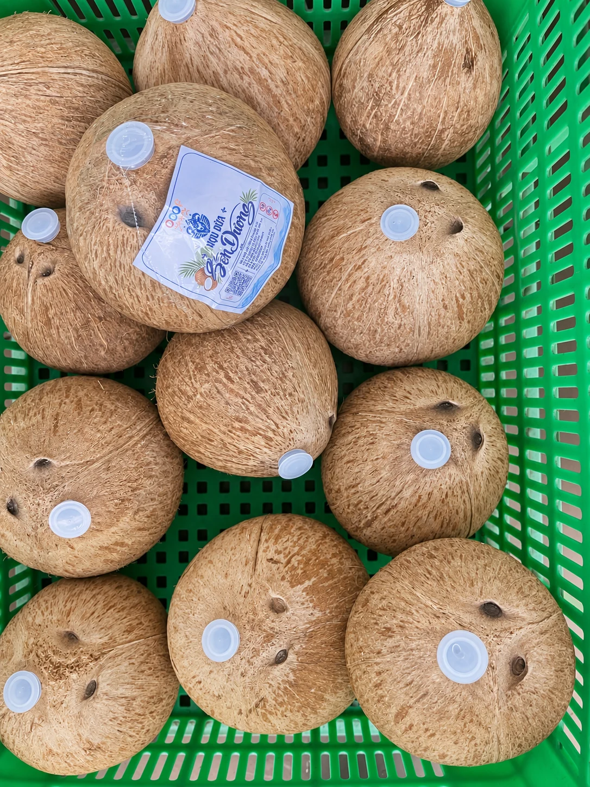
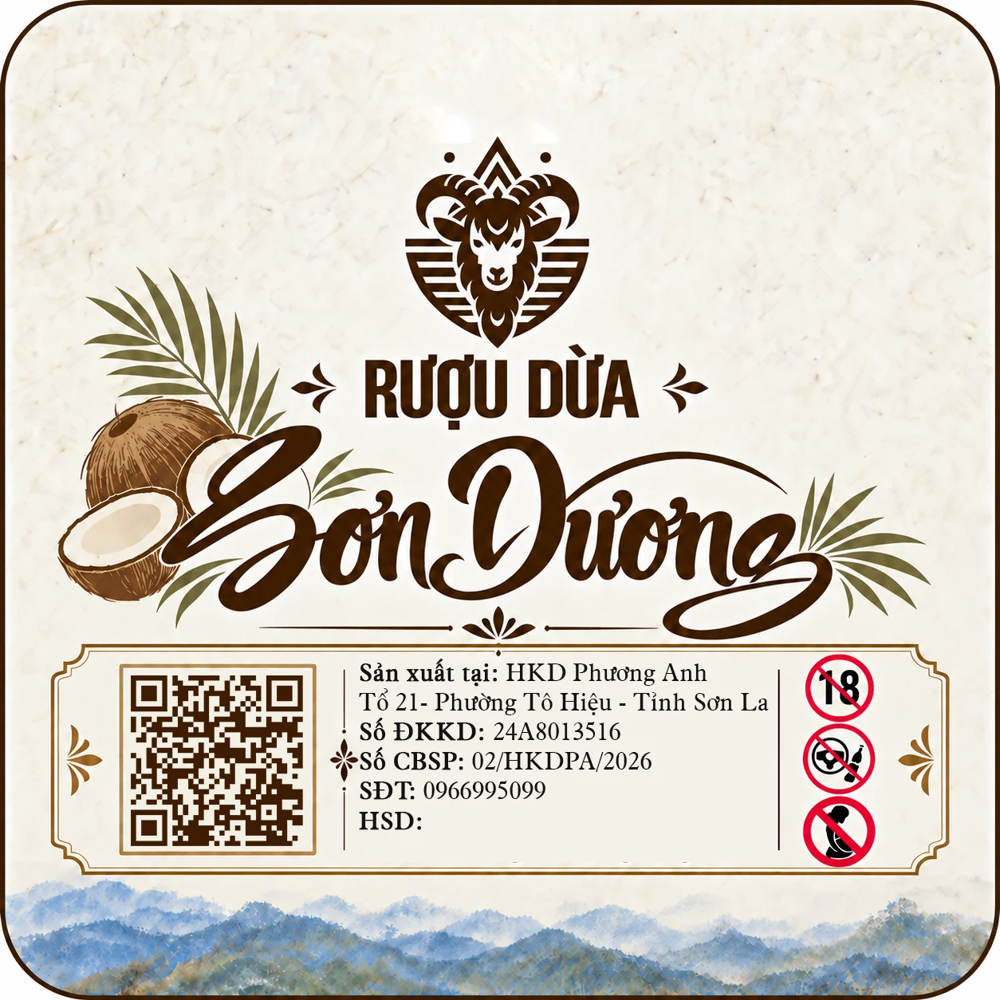

PHƯƠNG ANH · SƠN LA
Rượu dừa
Sơn Dương.
Một hương vị khác,
trong dáng quả mộc mạc.
Khám phá rượu dừa Sơn Dương của Phương Anh — sản phẩm đựng trong trái dừa, với nắp đóng và nhãn nhận diện riêng.


RƯỢU DỪA SƠN DƯƠNG
Tinh hoa Bến Tre – Đậm tình Tây Bắc
Rượu Dừa Sơn Dương là sự kết hợp độc đáo giữa những trái dừa Bến Tre – vùng đất nổi tiếng với những vườn dừa xanh mát – và rượu men lá truyền thống Tây Bắc, mang đậm hương vị núi rừng.
Từng trái dừa được tuyển chọn kỹ lưỡng, kết hợp cùng rượu men lá được ủ theo phương pháp truyền thống, tạo nên hương vị đặc trưng: hương dừa thơm dịu, vị rượu đậm đà và hậu vị êm dịu.
Rượu Dừa Sơn Dương không chỉ là sự giao hòa giữa đặc sản miền Nam và tinh hoa miền Bắc, mà còn là món quà mang đậm bản sắc Việt, thích hợp để thưởng thức trong những dịp sum họp và làm quà biếu ý nghĩa.
Rượu Dừa Sơn Dương – Hương dừa phương Nam, men say Tây Bắc.
Gọi 0966 995 099 ↗KẾT NỐI VỚI PHƯƠNG ANH
Mang hương vị
Sơn La về nhà.
Liên hệ để được tư vấn sản phẩm và giá bán.
Nhắn tin Zalo ↗